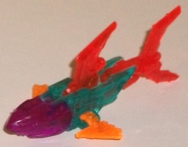
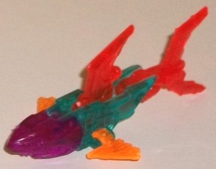

Difficulty of Assembly : Very Easy
Color Scheme : Transparent aquamarine, transparent fiery orange, transparent violet, and transparent red
Rating : 5.5
Ratbat's another former
Soundwave minion that's made the transition into a Mini-Con, this one a
torpedo minion of
Fracture
. In
torpedo mode, Ratbat looks like... well, like he's got himself tucked into
a torpedo shape. The actual face is partially hidden by the front pieces,
but the head is pretty darned obvious with the ears poking up and all that.
The large wing/leg pieces make for good sides of the torpedo mode and are
quite aerodynamic-looking. All in all it's a pretty solid mode, it's just
that darned middle section is way too obvious. The mold detailing-- as
is the case with most RID2015 Mini-Cons-- is pretty impressive, with angular
armor bits nearly everywhere on the figure, making Ratbat look pretty jagged
and eeeevil. For a color scheme, Ratbat's pretty basic; in this mode in
particular he's overwhelmingly a rusty brown shade, which is a pretty good,
realistic shade for a bat. There's just a bit of black on the front tip
of this mode when looked at normally, but on the bottom the black is much
more prevalent, being over relatively flat areas on the front and side
areas of the bottom. The two colors go together alright, but not spectacularly,
and like most Mini-Cons, he's pretty light on paint. He's got some silver
on the top of the head and the forehead, but that's all that's visible
in this mode, which is a bit underwhelming.
To transform Ratbat
to bat mode, you simply rotate his side pieces down. This creates a rather...
confusing bat mode. I guess his appendages are supposed to be his wings...
but then they don't look like wings. They look like two big feet, accentuated
by the fact they have little black toes on the bottom. I just don't understand
what Hasbro was thinking with this one. You couldn't give him small feet
and have the sides fold out into wings? I don't think it would be that
difficult, even keeping in mind the limitations with this small size-class
and the one-step transformation gimmick. As is, he looks like some hideous
bat-monster with no wings and two gigantic legs. Plus, from a side view
there's a decent section of his body that hangs a bit unsightly out behind
the legs. (That said, the exposed piston details on the body in this mode
are just very well-done.) His face certainly looks menacing, with several
lines of detail across the eyes and a "hissing"-like expression molded
onto his face. There's a bit of additional paint in this mode-- his eyes
are painted light red, but it's so close to the rusty brown they're a bit
hard to see in normal lighting. Like many Mini-Cons, Ratbat unfortunately
can't move at all in this mode-- if you move the legs forward, he starts
to transform back into his torpedo mode. Also like most Mini-Cons, Ratbat
comes with several transparent armor pieces, and his are a transparent
aquamarine-- a really nifty shade by itself, but they look even better
contrasting against all the rusty brown, and make what is otherwise a dull
scheme look pretty cool when they're all on. As for the armor pieces themselves,
there's a blade piece that sticks out below his head; a dual-barreled gun
piece that pegs in above his head (and which I have unfortunately lost,
hence why I'm using a stock image for him with the armor on); large blade-like
pieces that go in front of his shoulders; two bits with fiery-like details
that go in front of his lower legs; and two small armor pieces that fit
over his feet. Overall it's some pretty dynamite armor, and it all can
stay on in torpedo mode, as well.
RID2015 Ratbat has some
pretty cool armor pieces, as well some surprisingly intricate detailing,
but is my least favorite out of all the Decepticon torpedo Mini-Cons, mainly
because his bat mode just looks so freaking weird. He looks like he's got
two giant legs and no wings, and it's very difficult to see those appendages
as anything else. His torpedo mode, although solid from a silhouette standpoint,
also has the head poking out obviously. Only recommended if you're a Mini-Con
completist or huge Ratbat fan.
 Wave
2 "Bonus" Figure
Wave
2 "Bonus" Figure

Difficulty of Assembly
: Very Easy
Color Scheme
: Transparent aquamarine,
transparent fiery orange, transparent violet, and transparent red
Rating
: 5.5
Just like the
first
Wave 1 "bonus" figure
, this figure is completely unmentioned in the
instructions, and was only known about because Hasbro mentioned its existence
at a convention. To form this wave's bonus figure, you take the main "blade"
parts from Ratbat, the little missile launcher/fin parts from
Beastbox
,
the head halves from
Sandsting
, and the tailfin
and main fin from
Velocirazor
. They all
snap together fairly nicely and easily, forming a nice "rainbow shark",
with just a huge buncha bright colors. The aquamarine and purple on the
main body go together pretty well, and the red and orange work as nice
"accent" colors on the fins. The proportions are fairly good from the side,
though given that the body is made from just combining a couple of thin
armor parts together it's a bit skinny when looking at the shark from a
front-on view. The mold detailing is really nice, particularly for a RID2015
toy, with intricate little eye and teeth details on the head, angular robotic
details on the red fins, and little "thruster"-like details on the orange
fins that double as missile launchers on Beastbox. It's a pretty well-thought-out
extra toy, but... it's basically a statue. I mean, you can move the clip-on
orange fins up and down a little, but that's it as far as articulation.
It's basically a static little extra piece of combined plastic, so its
play value isn't that great by itself.
The Wave 2 "bonus" shark
figurine is an appreciated little extra-- especially since they stopped
doing this after this wave. It's got some nice detailing, a pretty eye-catching
color combo, and some decent proportions if you don't look at him from
the front. However, compared to the Wave 1 bonus figure this one's pretty
much a brick, and a little smaller to boot, so I'd say this is the lesser
of the 2 bonus figurines.
(Ratbat Armor pic from Hasbro .)
Reviews by Beastbot